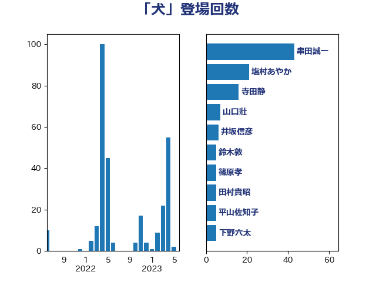

単語「犬」

| 串田誠一 | 日本維新の会 | 43 回 |
| 塩村あやか | 立憲民主党 | 21 回 |
| 寺田静 | 無所属 | 16 回 |
| 山口壯 | 自由民主党 | 7 回 |
| 井坂信彦 | 立憲民主党 | 6 回 |
| 鈴木敦 | 国民民主党 | 5 回 |
| 篠原孝 | 立憲民主党 | 5 回 |
| 田村貴昭 | 日本共産党 | 5 回 |
| 平山佐知子 | 無所属 | 5 回 |
| 下野六太 | 公明党 | 5 回 |
| 阿部弘樹 | 日本維新の会 | 4 回 |
| 赤羽一嘉 | 公明党 | 4 回 |
| 山本太郎 | れいわ新選組 | 4 回 |
| 大石あきこ | れいわ新選組 | 4 回 |
| 佐々木さやか | 公明党 | 4 回 |
| 梅村みずほ | 日本維新の会 | 3 回 |
| 山本剛正 | 日本維新の会 | 3 回 |
| 大岡敏孝 | 自由民主党 | 3 回 |
| 足立康史 | 日本維新の会 | 2 回 |
| 石田真敏 | 自由民主党 | 2 回 |
| 橋本岳 | 自由民主党 | 2 回 |
| 横沢高徳 | 立憲民主党 | 2 回 |
| 市村浩一郎 | 日本維新の会 | 2 回 |
| 山田勝彦 | 立憲民主党 | 2 回 |
| 小山展弘 | 立憲民主党 | 2 回 |
| 務台俊介 | 自由民主党 | 2 回 |
| 中田宏 | 自由民主党 | 2 回 |
| 鈴木庸介 | 立憲民主党 | 1 回 |
| 野田佳彦 | 立憲民主党 | 1 回 |
| 野村哲郎 | 自由民主党 | 1 回 |
| 進藤金日子 | 自由民主党 | 1 回 |
| 西村明宏 | 自由民主党 | 1 回 |
| 菅家一郎 | 自由民主党 | 1 回 |
| 田村智子 | 日本共産党 | 1 回 |
| 湯原俊二 | 立憲民主党 | 1 回 |
| 浮島智子 | 公明党 | 1 回 |
| 浜田聡 | NHK党 | 1 回 |
| 江藤拓 | 自由民主党 | 1 回 |
| 榛葉賀津也 | 国民民主党 | 1 回 |
| 根本匠 | 自由民主党 | 1 回 |
| 林芳正 | 自由民主党 | 1 回 |
| 松山政司 | 自由民主党 | 1 回 |
| 本田顕子 | 自由民主党 | 1 回 |
| 本村伸子 | 日本共産党 | 1 回 |
| 徳永エリ | 立憲民主党 | 1 回 |
| 後藤茂之 | 自由民主党 | 1 回 |
| 岸田文雄 | 自由民主党 | 1 回 |
| 山田美樹 | 自由民主党 | 1 回 |
| 小泉進次郎 | 自由民主党 | 1 回 |
| 奥下剛光 | 日本維新の会 | 1 回 |
| 大島九州男 | れいわ新選組 | 1 回 |
| 和田有一朗 | 日本維新の会 | 1 回 |
| 吉田宣弘 | 公明党 | 1 回 |
| 北神圭朗 | 無所属 | 1 回 |
| 中根一幸 | 自由民主党 | 1 回 |
| ながえ孝子 | 無所属 | 1 回 |